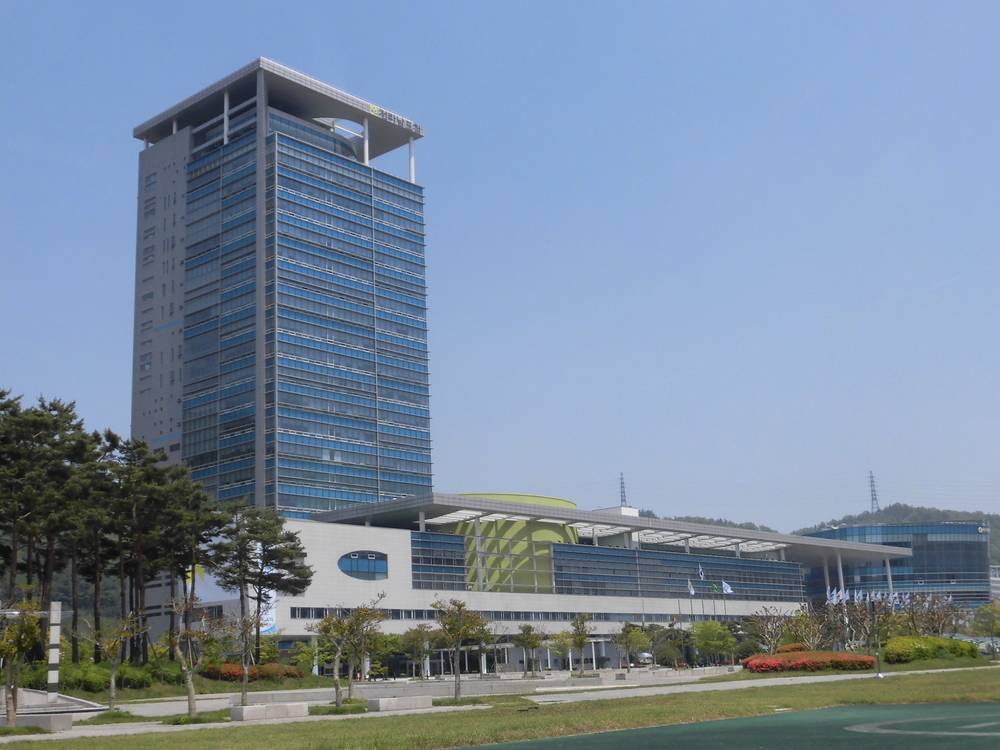

전남광주도시개발에너지공사 본사 어디로…전남개발공사 노조 "무안에", 광주도시공사 노조 "조례도 안 됐는데 시기상조"

22개 산하기관 11곳으로 통합 추진…7개 기관 조례안 다음 달 16일까지 정례회에서 심사
전남개발공사와 광주도시공사를 합쳐 만드는 전남광주도시개발에너지공사의 본사 위치를 놓고 두 공사 노동조합이 맞서고 있다. 전남개발공사 노조는 11일 전남광주통합특별시청 무안청사 앞에서 조합원 총궐기·결의대회를 열고, 통합공사 본사를 무안에 두고 권역별 기능도 고르게 나눠야 한다고 요구했다. 노조는 공공기관의 핵심 기능이 광주권에 몰리면 산업 기반이 약한 서남권의 인구 감소와 청년 유출이 더 심해져 통합의 취지가 흐려진다고 주장했다.
광주도시공사 노조는 통합조례안이 아직 의결되지 않은 상황에서 본사 위치를 꺼내는 것은 이르다며, 한쪽이 장외에서 결론을 정해 놓고 요구하는 방식은 갈등과 직원 불안만 키운다고 반박했다. 박정팔 광주도시공사 노조위원장은 "모든 근로자가 불이익을 받지 않도록 노사정 협의체를 만들자"고 제안했다.
전남광주시는 22개 산하 공공기관을 11곳으로 줄이는 통합을 추진하고 있으며, 에너지공사를 포함한 7개 기관의 설립·지원 조례안을 시의회에 냈다. 시의회는 다음 달 16일까지 열리는 정례회에서 조례안을 다루고, 통과하면 내년 1월 기관 통합과 기관장 선임 절차가 시작된다.
시민에너지 관점
독일에는 시·군이 소유한 지역 에너지공사(슈타트베르케)가 수백 곳 있고, 이들이 지역 태양광·풍력과 열 공급을 맡아 번 돈을 다시 지역에 쓴다. 전남광주에 처음 '에너지'를 이름에 단 공사가 생기는데, 논의가 본사 위치에만 머물면 정작 이 공사가 주민과 무엇을 나눌지는 빠지게 된다. 서남권의 걱정은 본사 건물보다 그 지역 바람과 햇빛에서 나온 수익이 지역에 남느냐에 있다. 시의회는 조례 심사에서 본사 위치와 함께 주민 출자·이익공유 사업을 공사의 핵심 업무로 못 박아야 한다.
출처: 전남일보 2026-11-12 정상아 원문 보기
全南光州都市開発エネルギー公社の本社はどこに…全南開発公社労組「務安に」、光州都市公社労組「条例もまだなのに時期尚早」
22の傘下機関を11に統合推進…7機関の条例案を来月16日までの定例会で審査
全南開発公社と光州都市公社を統合して設立する全南光州都市開発エネルギー公社の本社所在地をめぐり、両公社の労働組合が対立している。全南開発公社の労組は11日、全南光州統合特別市庁の務安庁舎前で組合員総決起・決議大会を開き、統合公社の本社を務安に置き、圏域ごとの機能もバランスよく配分するよう求めた。労組は、公共機関の中核機能が光州圏に集中すれば、産業基盤の弱い西南圏の人口減少と若者の流出がさらに深刻になり、統合の趣旨が損なわれると主張した。
光州都市公社の労組は、統合条例案がまだ議決されていない段階で本社の所在地を持ち出すのは早すぎるとし、一方が場外で結論を決めて要求するやり方は対立と職員の不安を大きくするだけだと反論した。朴正八（パク・ジョンパル）光州都市公社労組委員長は「すべての労働者が不利益を受けないよう労使政の協議体をつくろう」と提案した。
全南光州市は22の傘下公共機関を11に減らす統合を進めており、エネルギー公社を含む7機関の設立・支援条例案を市議会に提出した。市議会は来月16日まで開かれる定例会で条例案を扱い、可決されれば来年1月に機関統合と機関長選任の手続きが始まる。
市民エネルギーの視点
ドイツには市や郡が所有する地域エネルギー公社（シュタットヴェルケ）が数百あり、地域の太陽光・風力や熱供給を担って得た利益を再び地域に使っている。全南光州に初めて「エネルギー」を名に掲げる公社が生まれるのに、議論が本社の所在地にとどまれば、この公社が住民と何を分かち合うのかという肝心な点が抜け落ちる。西南圏の懸念は本社の建物よりも、その地域の風と日差しから生まれる収益が地域に残るかどうかにある。市議会は条例審査で、本社の所在地とあわせて住民出資・利益共有事業を公社の中核業務として明記すべきだ。
出典: 전남일보 2026-11-12 정상아 原文を読む
全南光州城市开发能源公社总部设在哪里？全南开发公社工会主张“务安”，光州城市公社工会：“条例都没通过，为时过早”
推动将22家下属机构整合为11家…7家机构条例草案将在下月16日前的例会上审议
由全南开发公社和光州城市公社合并组建的全南光州城市开发能源公社，其总部选址引发两家公社工会对立。全南开发公社工会11日在全南光州统合特别市厅务安办公楼前举行会员总动员大会，要求把合并后公社的总部设在务安，并在各区域间均衡分配职能。工会认为，如果公共机构的核心职能集中在光州一带，产业基础薄弱的西南地区人口减少和青年外流将更加严重，合并的初衷也会被削弱。
光州城市公社工会反驳说，合并条例草案尚未通过就提出总部选址问题为时过早，一方在场外先定结论再提出要求，只会加剧矛盾和员工的不安。光州城市公社工会委员长朴正八提议：“为了让所有员工都不受损害，应成立劳资政协商机制。”
全南光州市正推动把22家下属公共机构整合为11家，并已向市议会提交包括能源公社在内的7家机构的设立和支持条例草案。市议会将在下月16日前召开的例会上审议这些草案，如获通过，明年1月将启动机构合并和机构负责人选任程序。
市民能源视角
德国有数百家由市、县所有的地方能源公司（Stadtwerke），负责当地的太阳能、风电和供热，并把赚到的钱再用于地方。全南光州首次出现名称中带有“能源”的公社，如果讨论只停留在总部选址上，这家公社要与居民分享什么这一关键问题就会被忽略。西南地区真正的担忧不在于总部大楼，而在于当地风能和阳光带来的收益能否留在当地。市议会在审议条例时，应在确定总部选址的同时，把居民出资和利益共享项目明确写成公社的核心业务。
来源: 전남일보 2026-11-12 정상아 查看原文
Where should the new Jeonnam-Gwangju urban development and energy corporation be based? Unions split between Muan and 'too early'
Plan to merge 22 affiliated bodies into 11; council to review ordinances for seven agencies at session ending next month's 16th
The unions of Jeonnam Development Corporation and Gwangju Metropolitan Development Corporation are at odds over where to locate the headquarters of the Jeonnam-Gwangju Urban Development and Energy Corporation, which will be created by merging the two. The Jeonnam union held a rally on the 11th in front of the Muan office of the integrated Jeonnam-Gwangju special city, demanding that the merged corporation's head office be placed in Muan and its functions be spread evenly across regions. It argued that concentrating core public-sector functions in the Gwangju area would worsen population decline and youth outflow in the industrially weaker southwest and undermine the purpose of the merger.
The Gwangju union countered that raising the location question before the merger ordinance has even been passed is premature, and that one side setting a conclusion outside the negotiating table only fuels conflict and staff anxiety. Its chairman, Park Jeong-pal, proposed forming a labour-management-government council 'so that no worker is disadvantaged'.
Jeonnam-Gwangju is pursuing a plan to cut its 22 affiliated public bodies to 11 and has submitted ordinances to establish and support seven of them, including the energy corporation, to the city council. The council will take up the bills at its regular session running until the 16th of next month; if they pass, the mergers and appointment of agency heads will begin in January.
Citizen Energy View
Germany has hundreds of municipally owned local utilities, the Stadtwerke, which run local solar, wind and heat supply and spend their earnings back in their communities. Jeonnam-Gwangju is about to get its first public corporation with 'energy' in its name, but if the debate stops at the headquarters, the key question of what it will share with residents gets lost. The southwest's real worry is less about an office building than whether the income from its own wind and sunshine stays in the region. In reviewing the ordinance, the council should write resident investment and benefit-sharing projects into the corporation's core mandate alongside its headquarters location.
Source: 전남일보 2026-11-12 정상아 Read the original